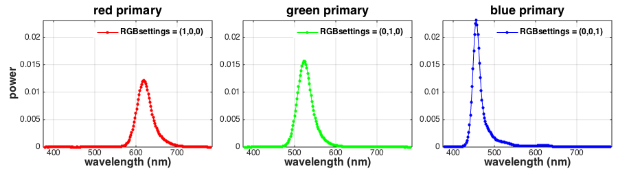
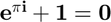
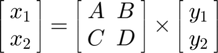

Contents
- Initialize state
- Load a calibration file generated by OOC_calibrateMonitor
- Inspect the imported calStruct
- Instantiate a @CalStruct object that will handle controlled access to the calibration data.
- Get the wavelength sampling of the device that was used to take the measurement
- Get the measured spectra of the primaries.
- Plot the measured spectra
- Get the gamma tables (raw and interpolated)
- In mathematical notation:
function RunCalibrationTutorial
Initialize state
close all; global figNum figNum = 0;
Load a calibration file generated by OOC_calibrateMonitor
Specify the calibration file to load
calFileName = '240OLED_SDAL2'; % Specify to get the most recent entry calStruct= LoadCalFile(calFileName);
Inspect the imported calStruct
fieldnames(calStruct)
ans =
'describe'
'basicLinearitySetup'
'backgroundDependenceSetup'
'rawData'
'processedData'
Instantiate a @CalStruct object that will handle controlled access to the calibration data.
[calStructOBJ, ~] = ObjectToHandleCalOrCalStruct(calStruct); % Clear the imported calStruct. From now on, all access to cal data is via the calStructOBJ. clear 'calStruct';
Get the wavelength sampling of the device that was used to take the measurement
S = calStructOBJ.get('S');
Get the measured spectra of the primaries.
P_device = calStructOBJ.get('P_device');
Plot the measured spectra
PlotPrimarySpectra(S, P_device);
Get the gamma tables (raw and interpolated)
gammaInput = calStructOBJ.get('gammaInput'); rawGammaInput = calStructOBJ.get('rawGammaInput'); gammaTable = calStructOBJ.get('gammaTable'); rawGammaTable = calStructOBJ.get('rawGammaTable');
In mathematical notation:
We have:


end function PlotPrimarySpectra(S, P_device) global figNum wavelengthAxis = SToWls(S); figNum = figNum + 1; % Steup subplot position vectors subplotPosVectors = NicePlot.getSubPlotPosVectors(... 'rowsNum', 1, ... 'colsNum', size(P_device,2), ... 'widthMargin', 0.05, ... 'leftMargin', 0.07, ... 'bottomMargin', 0.15, ... 'topMargin', 0.1); % Specify line colors, here for 3 primaries lineColors = [... 1.0 0.0 0.0; 0.0 1.0 0.0; 0.0 0.0 1.0 ]; % Specify titles titles = {'red primary', 'green primary', 'blue primary'}; % Specify legends legends = {'RGBsettings = (1,0,0)', 'RGBsettings = (0,1,0)', 'RGBsettings = (0,0,1)'}; hFig = figure(figNum); set(hFig, 'Position', [100 100 900 250]); for primaryIndex = 1:size(P_device,2) % generate subplot subplot('Position', subplotPosVectors(1,primaryIndex).v); plot(wavelengthAxis, P_device(:,primaryIndex), ... '.-', 'Color', lineColors(primaryIndex,:), 'MarkerSize', 16); box on; grid on; % set plot limits set(gca, 'XLim', [wavelengthAxis(1)-5 wavelengthAxis(end)+5], 'YLim', [0 max(P_device(:))]); % set plot labels xlabel('wavelength (nm)'); title(titles{primaryIndex}); if (primaryIndex == 1) ylabel('power'); end % set legend legend(legends{primaryIndex}); end % Set fonts for all axes, legends, and titles NicePlot.setFontSizes(hFig, 'FontSize', 12); end